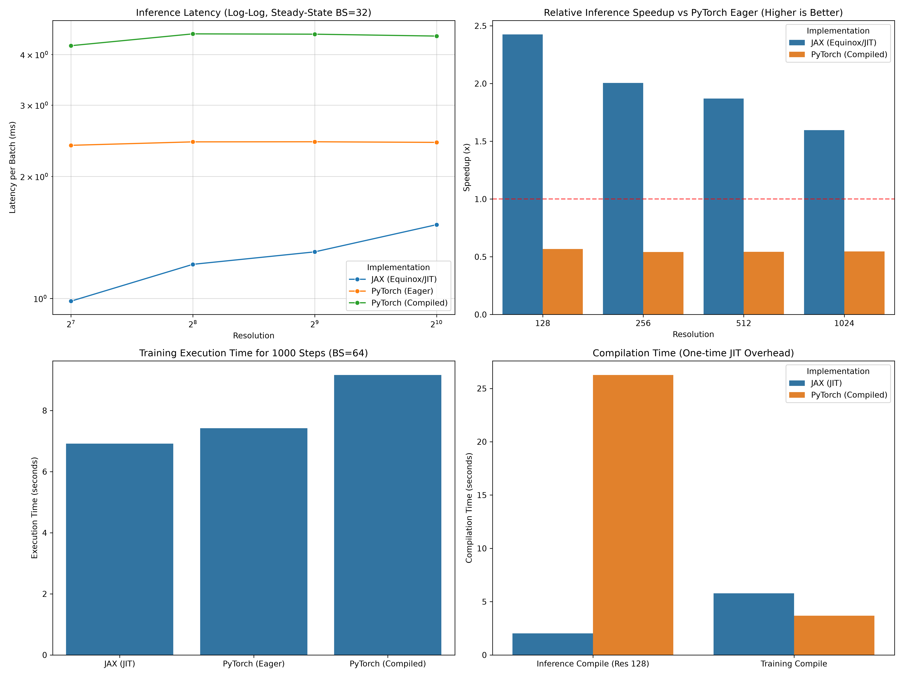
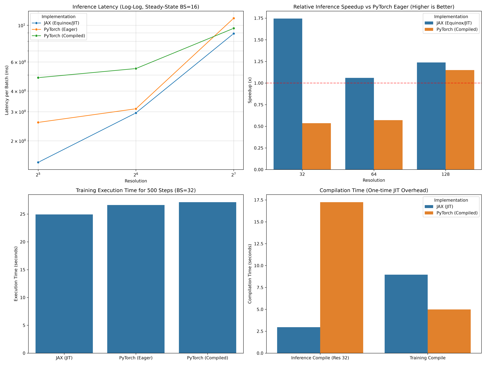

Benchmarks: Neojax (JAX/Equinox) vs NeuralOperator (PyTorch)¤
This page provides a performance comparison between the neojax FNO implementation and the reference implementation from the neuraloperator library for a 1D Burgers equation and 2D Navier-Stokes equation.
Important
Environment Setup Guidelines: JAX and PyTorch can be notoriously difficult to run together in the same Python environment due to conflicting CUDA, cuDNN, and package dependency requirements.
For a clean, error-free run, we highly recommend setting up two separate virtual environments (venvs):
- JAX Environment (for running JAX benchmarks and data preparation (1D data only)):
- Requirements:
jax,jaxlib,equinox,optax,diffrax,neojax(this library) - PyTorch Environment (for running PyTorch benchmarks and the plotting/dashboard scripts):
- Requirements:
torch,torchvision,neuraloperator,matplotlib,seaborn,pandas,h5py,netCDF4(if using 2D data)
Running Commands:
If you have uv installed, prefix commands with uv run to automatically manage the virtual environment. Otherwise, standard Python virtual environments can be activated (source venv/bin/activate) and run with standard python prefixes.
Benchmark Setup¤
- Hardware: NVIDIA A100 48GB GPU
- Model Configuration:
- Hidden Channels: 64
- Fourier Modes: 16
- Layers: 4
- Task: 1D Burgers Equation
- Metrics:
- Inference Time: Average time per forward pass (in milliseconds).
- Compilation Time: Time required for the first JIT call (
eqx.filter_jitfor JAX,torch.compilefor PyTorch).
Performance Comparison¤
1D Burgers' Equation Benchmark Results¤
Inference Latency (Average per Batch of size 32)¤
| Spatial Resolution | JAX (JIT) | PyTorch (Eager) | PyTorch (Compiled) | JAX Speedup vs Eager | JAX Speedup vs Compiled |
|---|---|---|---|---|---|
| 128 | 0.98 ms | 2.39 ms | 4.20 ms | 2.44x | 4.29x |
| 256 | 1.21 ms | 2.43 ms | 4.50 ms | 2.01x | 3.72x |
| 512 | 1.30 ms | 2.44 ms | 4.49 ms | 1.88x | 3.45x |
| 1024 | 1.52 ms | 2.43 ms | 4.44 ms | 1.60x | 2.92x |
Training Performance (1000 Steps, Batch Size 64)¤
| Implementation | Training Time (s) | Avg. Step Latency | Speedup vs PyTorch Eager | Speedup vs PyTorch Compiled |
|---|---|---|---|---|
| JAX (Equinox/JIT) | 6.92 s | 6.92 ms | 1.07x | 1.32x |
| PyTorch (Eager) | 7.42 s | 7.42 ms | 1.00x (Baseline) | 1.24x |
| PyTorch (Compiled) | 9.17 s | 9.17 ms | 0.81x (Slowdown) | 1.00x |
Compilation Overhead (One-time Cost)¤
| Task / Model Phase | JAX (JIT) Compile | PyTorch Compiled |
|---|---|---|
| Inference Compile (Res 128) | 2.02 s | 26.27 s |
| Training Compile (Res 1024) | 5.78 s | 3.69 s |

2D Navier-Stokes (camlab-ethz/FNS-K) Benchmark Results¤
Inference Latency (Average per Batch of size 16)¤
| Grid Resolution | JAX (JIT) | PyTorch (Eager) | PyTorch (Compiled) | JAX Speedup vs Eager | JAX Speedup vs Compiled |
|---|---|---|---|---|---|
| 32 x 32 | 1.48 ms | 2.58 ms | 4.82 ms | 1.74x | 3.25x |
| 64 x 64 | 2.95 ms | 3.13 ms | 5.47 ms | 1.06x | 1.85x |
| 128 x 128 | 8.91 ms | 11.03 ms | 9.59 ms | 1.24x | 1.08x |
Training Performance (500 Steps, Batch Size 32)¤
| Implementation | Training Time (s) | Avg. Step Latency | Speedup vs PyTorch Eager | Speedup vs PyTorch Compiled |
|---|---|---|---|---|
| JAX (Equinox/JIT) | 24.92 s | 49.84 ms | 1.07x | 1.09x |
| PyTorch (Eager) | 26.63 s | 53.26 ms | 1.00x (Baseline) | 1.02x |
| PyTorch (Compiled) | 27.14 s | 54.28 ms | 0.98x (Slowdown) | 1.00x |
Compilation Overhead (One-time Cost)¤
| Task / Model Phase | JAX (JIT) Compile | PyTorch Compiled |
|---|---|---|
| Inference Compile (Res 32) | 2.96 s | 17.24 s |
| Training Compile (Res 128) | 8.96 s | 4.99 s |

Why JAX is Generally Faster & PyTorch Compiled Has Overhead¤
The performance difference between JAX (Equinox/JIT) and PyTorch (Eager/Compiled) stems from their core compiler architectures. While these advantages apply to all machine learning models, they are especially pronounced in spectral architectures like FNOs.
- Low-Latency Dispatch vs. Dynamic Runtime Guards:
- PyTorch Compiled:
torch.compileis designed to support dynamic Python code. To ensure correctness, the compiler inserts Guards (e.g., checks verifying shape, data type, and memory strides) that are evaluated in Python on every single call before executing the compiled kernel (see PyTorch Compiler FAQ). For small-to-medium models or lightweight batches where GPU execution is very fast (under a few milliseconds), this Python guard-checking overhead can exceed the time spent running the GPU kernel itself. -
JAX JIT: JAX uses a static, tracing-based JIT compilation model (How JAX JIT Works). It compiles the model once for static input shapes and places the binary in a C++ lookup cache. By bypassing Python-level runtime guards entirely, JAX achieves extremely low dispatch latency, making it significantly faster for fast-running inference and training steps.
-
Whole-Graph Compilation & Global Kernel Fusion:
- JAX JIT: The OpenXLA Compiler compiles the entire model forward and backward pass as a single mathematical graph. It is highly mature at fusing consecutive operations (like pointwise MLPs, skip connections, and activation functions) into a single optimized GPU kernel. This drastically reduces slow GPU global memory read/writes.
-
PyTorch Compiled: PyTorch's Inductor backend attempts similar fusions, but often encounters "graph breaks" or ATen C++ fallbacks when meeting unsupported APIs or complex control flow, breaking graph continuity and introducing memory roundtrips.
-
Optimized Spectral Operations (FFTs & Complex Math): While the low-latency dispatch and global fusion benefits apply to all models, FNOs see a much larger speedup because of how Fast Fourier Transforms are compiled:
- OpenXLA has decades of mature support for complex number math and multi-dimensional FFTs. It fuses the FFT/IFFT steps directly with the FNO channel MLPs and weight multiplications.
- PyTorch's Inductor/Triton compiler has known limitations with complex numbers and FFT operations. During compilation, PyTorch will print warnings like:
UserWarning: torch.compile/Inductor does not support code generation for complex operators. Performance may be worse than eager.This warning is expected and confirms that Inductor falls back to standard eager-mode C++ (ATen) kernels for the spectral layers. This breaks kernel fusion, splits the compiled graph, and introduces extra dispatch overhead—explaining why PyTorch Compiled is slower than PyTorch Eager in the benchmarks.
Reproduction¤
1D Burgers' Equation Benchmark¤
Dataset Preparation:¤
To generate the 1D Burgers' equation training dataset (1,200 trajectories at resolution 1024), run the preparation script:
uv run python benchmarks/benchmark_prep.py --dataset_file benchmarks/data/dataset.npz
Warning
Generating the dataset involves solving stiff ordinary differential equations via JAX's diffrax solver. This process is highly vectorized and takes only 1 minute (roughly) on a GPU, but can take several minutes on a CPU due to sequential ODE solving.
Benchmark Execution:¤
To reproduce the 1D benchmark results:
-
Run JAX 1D Benchmark:
uv run python benchmarks/benchmarks_neojax.py \ --dataset_file benchmarks/data/dataset.npz \ --stat_file benchmarks/data/stats_neojax.json \ --train_steps 1000 \ --train_batch_size 64 \ --inf_batch_size 32 -
Run PyTorch 1D Benchmark:
uv run python benchmarks/benchmarks_neuralop.py \ --dataset_file benchmarks/data/dataset.npz \ --stat_file benchmarks/data/stats_neuralop.json \ --train_steps 1000 \ --train_batch_size 64 \ --inf_batch_size 32 \ --device cuda -
Generate 1D Dashboard:
uv run --with matplotlib --with pandas --with seaborn python benchmarks/benchmark_plot.py \ --stat_file_neojax benchmarks/data/stats_neojax.json \ --stat_file_neuralop benchmarks/data/stats_neuralop.json \ --benchmark_imgs_dir benchmarks/data \ --output_name performance_dashboard_1d.png
2D Navier-Stokes Benchmark (camlab-ethz/FNS-KF)¤
This benchmark compares 2D Fourier Neural Operator scaling using the Forced incompressible Navier-Stokes Kolmogorov Flow dataset from the PDEgym collection by ETH Zurich.
Dataset Preparation:¤
You can download the dataset in one of two ways:
Option A: Using huggingface-cli (Recommended)
huggingface-cli download camlab-ethz/FNS-KF --repo-type dataset --local-dir ./FNS-KF
Option B: Direct download using wget or curl (No CLI dependencies)
mkdir -p FNS-KF
cd FNS-KF
# Download the assembly script
wget https://huggingface.co/datasets/camlab-ethz/FNS-KF/resolve/main/assemble_data.py
# Download the chunk files (solution_0.nc to solution_11.nc)
for i in {0..11}; do
wget https://huggingface.co/datasets/camlab-ethz/FNS-KF/resolve/main/solution_${i}.nc
done
cd ..
Warning
The dataset is 55.1GB in size.
Once downloaded, navigate to the directory and run the assembly script:
cd FNS-KF
python assemble_data.py --input_dir . --output_file FNS-KF.nc
mv FNS-KF.nc ../benchmarks/data/
cd ..
FNS-KF.nc file is not present, the benchmarking scripts will automatically fall back to generating synthetic 2D Navier-Stokes shape arrays so you can dry-run the scripts immediately).
Benchmark Execution:¤
-
Run JAX 2D Benchmark:
uv run python benchmarks/benchmarks_neojax_2d.py \ --dataset_file benchmarks/data/FNS-KF.nc \ --stat_file benchmarks/data/stats_neojax_2d.json \ --train_steps 500 \ --train_batch_size 32 \ --inf_batch_size 16 -
Run PyTorch 2D Benchmark:
uv run python benchmarks/benchmarks_neuralop_2d.py \ --dataset_file benchmarks/data/FNS-KF.nc \ --stat_file benchmarks/data/stats_neuralop_2d.json \ --train_steps 500 \ --train_batch_size 32 \ --inf_batch_size 16 \ --device cuda -
Generate 2D Dashboard:
uv run --with matplotlib --with pandas --with seaborn python benchmarks/benchmark_plot.py \ --stat_file_neojax benchmarks/data/stats_neojax_2d.json \ --stat_file_neuralop benchmarks/data/stats_neuralop_2d.json \ --benchmark_imgs_dir benchmarks/data \ --output_name performance_dashboard_2d.png
(Note: The scripts will automatically handle device fallbacks to MPS or CPU if CUDA is not available, though a GPU is highly recommended for fair performance comparisons).